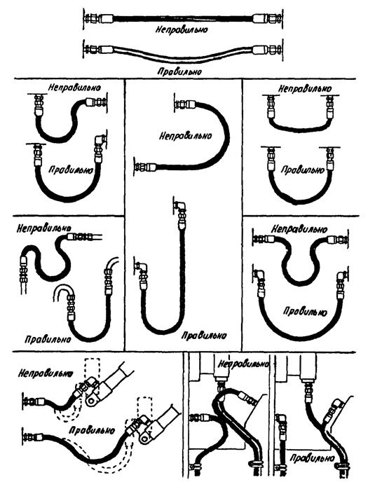
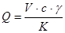
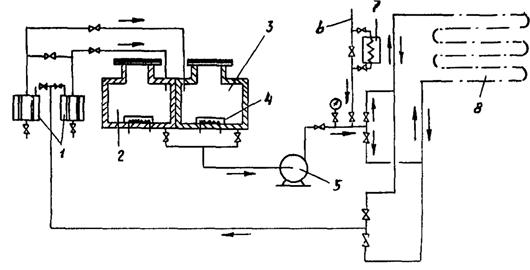

ВЕДОМСТВЕННЫЕ СТРОИТЕЛЬНЫЕ НОРМЫ
МОНТАЖ
СМАЗОЧНЫХ, ГИДРАВЛИЧЕСКИХ
И ПНЕВМАТИЧЕСКИХ СИСТЕМ
ОБЩЕПРОМЫШЛЕННОГО НАЗНАЧЕНИЯ
ВСН 411-88
Минмонтажспецстрой СССР
МИНИСТЕРСТВО
МОНТАЖНЫХ И СПЕЦИАЛЬНЫХ
СТРОИТЕЛЬНЫХ РАБОТ СССР
Москва 1988
РАЗРАБОТАНЫ Государственным проектным институтом Гипрометаллургмонтаж Главметаллургмонтажа минмонтажспецстроя СССР (Ю.Л. Колчинский, В.В. Гаврилов).
ВНЕСЕНЫ И ПОДГОТОВЛЕНЫ К УТВЕРЖДЕНИЮ Главметаллургмонтажем.
С введением в действие ВСН 411-88 Минмонтажспецстрой СССР "Монтаж смазочных, гидравлических и пневматических систем общепромышленного назначения" утрачивают силу ВСН 41180/ММСС СССР.
|
министерство монтажных и специальных строительных работ СССР (Минмонтажспецстрой СССР) |
Ведомственные строительные нормы |
ВСН 411-88 Минмонтажспецстрой СССР |
|
монтаж смазочных, гидравлических и пневматических систем общепромышленного назначения |
Взамен ВСН 411-80 ММСС ССОР |
1.2. ВСН 411-88 разработаны в развитие требований СНиП 3.05.05-84 по монтажу оборудования и трубопроводов систем, указанных в п. 1.1 настоящих ВСН.
1.3. При проектировании организации и технологии монтажа, при производстве монтажных работ, кроме требований настоящих ВСН, следует выполнять требования нормативных документов, приведенных в обязательном приложении 1, а также технической документации предприятий - изготовителей оборудования.
1.4. монтажные работы должны выполняться персоналом, имеющим опыт монтажа смазочных, гидравлических и пневматических систем.
1.5. Под системами, перечисленными в п. 1.1 настоящих ВСН, подразумеваются системы состоящие из:
1.5.1. Оборудования смазочных и насосно-аккумуляторных станций, а также станций централизованных систем охлаждения.
1.5.2. Аппаратуры управления и регулирования.
1.5.3. Трубопроводов с арматурой:
1.5.3.1. Соединяющих между собой оборудование станций систем.
1.5.3.2. Магистральных, прокладываемых внутри станций, в каналах, тоннелях, на эстакадах, колоннах и стенах помещений.
|
Внесены Главметаллургмонтажем Минмонтажспецстроя СССР |
Утверждены минмонтажспецстроем СССР |
Срок введения
в действие |
1.5.3.3. Подводящих рабочую среду к машинам и механизмам и отводящих ее от них.
1.5.3.4. Устанавливаемых непосредственно на машинах и механизмах.
1.6. Монтажная организация должна получить от генподрядчика (или по согласованию с ним, непосредственно от заказчика) за 5 мес. до начала монтажных работ следующую техническую и сметную документацию:
1.6.1. Рабочие чертежи систем, включая принципиальные схемы, планы, разрезы, спецификации, чертежи общих видов оборудования, панелей управления, деталировочные чертежи трубопроводов.
1.6.2. Паспорта оборудования, аппаратуры и арматуры.
1.6.3. Инструкции заводов-изготовителей по монтажу систем.
1.6.5. Сметы на выполнение работ по монтажу смазочных, гидравлических и пневматических систем.
1.7. Перечень монтажных и пусконаладочных работ, выполняемых при монтаже смазочных, гидравлических и пневматических систем, приведен в рекомендуемом приложении 2.
2.1. Монтажная организация в период подготовки осуществляет мероприятия, предусмотренные СНиП 3.05.05-84, и проверяет выполнение генподрядчиком касающихся его подготовительных работ в соответствии с проектом организации строительства (ПОС) и ППР.
2.2. Фундаменты, опорные конструкции, закладные детали, помещения маслоподвалов и насосно-аккумуляторных станций, тоннели и каналы принимают в соответствии с требованиями СНиП 3.05.05-84, СНиП III-15-76 и рабочими чертежами, указанными в п. 1.6.4.
2.3. В помещениях маслоподвалов и насосно-аккумуляторных станций должны быть выполнены внутренняя отделка и освещение, смонтированы приточно-вытяжная вентиляция, система пожаротушения, подъемно-транспортные механизмы, противопожарные самозакрывающиеся двери у выходов из помещений в цех, а также предусмотрены монтажные и эксплуатационные проемы для подачи оборудования и трубопроводов.
2.4. В тоннелях должны быть установлены перегородки с огнестойкими и герметически закрывающимися дверями, смонтированы освещение, система пожаротушения, приточно-вытяжная вентиляция, а также оставлены монтажные проемы для монтажа и демонтажа трубопроводов.
2.5. Расположение плашек и реперов на фундаментах для фиксирования осей и высотных отметок, необходимых для выверки оборудования, дается в схемах геодезического обоснования по заданию организации, которая проектирует оборудование.
2.6. При приемке оборудования, аппаратуры, арматуры и трубопроводов монтажная организация должна руководствоваться ГОСТ 24444-87, ОСТ 24.290.03-79, ОСТ 24.290.05-81, ОСТ 24.290.11-84 и техническими условиями заводов-изготовителей.
При этом необходимо проверить:
соответствие оборудования, аппаратуры, арматуры, труб, деталей и узлов трубопроводов проектам. Изменения или отступления от проекта допускаются с разрешения организации, разработавшей проект, и только после внесения соответствующих изменений в чертежи;
комплектность поставки;
монтажную маркировку на блоках и узлах оборудования, аппаратуры и трубопроводов;
наличие пломб на оборудовании, не подлежащем разборке и ревизии;
плотность прилегания крышек и фланцев в местах их соединения с корпусами оборудования и патрубками;
наличие постоянных (рабочих) прокладок и сальниковых набивок в оборудовании, аппаратах и арматуре;
возможность свободного проворачивания от руки валов насосных агрегатов и компрессоров, а также перемещения запорных и регулирующих органов арматуры и подвижных всасывающих устройств;
наличие устройств для строповки на блоках оборудования или аппаратах, а также щитах и панелях управления;
наличие отжимных винтов в рамах и плитах блоков станций или подкладок для их установки на фундаменты;
чистоту внутренних поверхностей труб, деталей и узлов трубопроводов;
наличие комплекта специального монтажно-сборочного инструмента, поставляемого предприятием-изготовителем.
Оборудование, аппаратуру, арматуру, трубы, детали и узлы трубопроводов принимают по акту (форма 12 ВСН 478-86/Минмонтажспецстрой СССР).
2.7. Оборудование, аппаратура и арматура, у которых истек гарантийный срок хранения или сорваны пломбы, а также хранившиеся с нарушением установленных правил, могут быть приняты в монтаж только после ревизии и восстановления (включая испытание) до полной монтажной готовности, выполненных заказчиком. Исключение составляет случаи, когда нарушения сроков и правил хранения, указанные в настоящем пункте, произошли по вине монтажной организации; в этих случаях ревизию и восстановление полной монтажной готовности оборудования, аппаратуры и арматуры производит монтажная организация.
2.8. К началу монтажа смазочных, гидравлических и пневматических систем в соответствии с ПОС и соответствующим разделом ППР должны быть оборудованы:
помещения и монтажная площадка для организации работ по монтажу систем;
склад для хранения оборудования, аппаратуры и арматуры;
склад для хранения узлов и деталей трубопроводов, труб и материалов (крепежных деталей, опор, прокладочных и других материалов);
при необходимости - площадки для укрупнительной сборки систем, для производства работ по химической обработке (травлению) труб, деталей и узлов трубопроводов, а также - временная мастерская для изготовления элементов и узлов трубопроводов смазочных, гидравлических и пневматических систем.
3.1. К установке оборудования и опорных конструкций под аппараты и трубопровода разрешается приступать после подписания актов готовности помещений систем (маслоподвалов, насосно-аккумуляторных станций, тоннелей, каналов) к производству монтажных работ и актов готовности фундаментов к установке оборудования и опорных конструкций под аппараты и трубопроводы, составленных по форме, приведенной в рекомендуемом приложении 3 настоящих ВСН и форме II по ВСН 478-86/Минмонтажспецстрой СССР.
3.2. Крупногабаритные блоки оборудования, баллоны пневмогидроаккумуляторов, панели управления подают в заглубленные помещения маслоподвалов и насосно-аккумуляторных станций до их перекрытия, а остальные блоки и узлы трубопроводов - через монтажные проемы. При установке насосно-аккумуляторных станций в отдельном здании или помещении баллоны гидропневмоаккумуляторов монтируют при возведении этих зданий (помещений).
3.3. В первую очередь в проектное положение следует устанавливать баки, пневмогидроаккумуляторы, насосные и компрессорные агрегаты, теплообменники и панели управления; остальное оборудование монтируют по осям и высотным отметкам патрубков ранее установленного оборудования (баков, насосов, теплообменников).
3.4. Монтаж полностью собранного, испытанного и опломбированного на предприятии-изготовителе оборудования сводится к установке его на фундаменты и обвязке трубопроводами; монтаж панелей управления состоит в установке их в проектное положение и подсоединении к магистралям и исполнительным механизмам.
3.5. Блоки и отдельно стоящее оборудование устанавливают на регулировочные винты или на подкладки, уложенные на фундаменты. Баки смазочных и гидравлических систем устанавливают на заранее выверенные опорные конструкции, забетонированные в пол помещения станции, или на выверенное бетонное основание.
3.6. После установки блоки и отдельно стоящее оборудование выверяют, закрепляют на фундаментных болтах, устанавливают (при необходимости) узлы обвязочных трубопроводов, присоединяют их к патрубкам и штуцерам оборудования, после чего опорные рамы и плиты подливают. После набора бетоном подливки 70 %-ной прочности окончательно затягивают гайки фундаментных болтов.
3.7. Опорные рамы или плиты пневмогидроаккумуляторов, поставляемые отдельно от баллонов и колонок сигнализаторов уровня, устанавливают на фундаменты, выверяют, закрепляют на фундаментных болтах и подливают. После набора бетоном подливки 70 №-ной прочности на рамы и плиты устанавливают баллоны и колонки, выверяют их и закрепляют в опорных конструкциях, а также окончательно затягивают гайки фундаментных болтов.
3.8. Отклонения от привязочных размеров осей оборудования не должны превышать в плане ±5 мм, по высоте ±5 мм. Для баков смазочных и гидравлических систем эти отклонения в плане допускаются в пределах 10 мм, выверка баков по высоте не производится.
Автоматические смазочные станции допускается устанавливать с отклонениями по высоте ±15 мм.
При установке опорных рам или плит оборудования отклонение их плоскости от горизонтали (в любом направлении) не должно превышать 0,2 мм на 1 м.
Отклонение от вертикали осей баллонов аккумуляторов, колонок сигнализаторов уровня, пресс-баков и фильтров не должно быть больше 1 мм на 1 м высоты.
3.9. Контроль правильности установки оборудования осуществляется:
3.9.1. В плане - с помощью рулетки измерительной металлической, струны и отвеса строительного по ГОСТ 7948-80, по высоте - с помощью нивелира технического Н-10 КЛ ГОСТ 10528-76 и рейки нивелирной РН-ЗП по ГОСТ 11158-83.
3.9.2. Отклонения от горизонтальности плоскостей рам и плит - поверочными линейками по ГОСТ 8026-75 и рамным уровнем 200-0,02 по ГОСТ 9392-75.
3.9.3. Отклонения осей баллонов, колонок, воздухосборников, пресс-баков и фильтров от вертикали - теодолитом по ГОСТ 10529-79.
3.10. По окончании монтажа баллонов пневмогидроаккумуляторов, пресс-баков и воздухосборников производятся их гидравлические испытания и регистрация в органах Госгортехнадзора в соответствии с действующими правилами.
3.11. Контрольно-измерительные приборы принимают в монтаж только при наличии на них пломб.
3.12. Установку приборов следует производить в соответствии с проектом и инструкциями предприятия-изготовителя по монтажу и эксплуатации. Если в проекте места установки отборных устройств указаны схематично, то заказчик должен указать действительные места их установки.
3.13. Манометры надлежит устанавливать в вертикальном положении на отборных устройствах. Манометры гидросистемы должны быть снабжены демпферным устройством, трехходовым краном или воздухоспускной пробкой. Подсоединение к манометрам следует выполнять на гибком подводе.
3.14. При монтаже поплавковых уровнемеров необходимо следить, чтобы поплавки, тросы или тяги перемещались свободно, без заеданий. Другие уровнемеры монтируют согласно инструкции предприятия-изготовителя.
Приваренные к трубопроводу бобышки (штуцера) не должны выступать внутрь трубопроводов, в противном случае они будут вызывать искажение показаний приборов.
4.1. Трубопроводы, поставляемые в виде готовых, протравленных и испытанных узлов вместе с арматурой и деталями соединений (включая крепежные изделия и прокладки), собирают из этих узлов и подключают к оборудованию или ранее смонтированному участку трубопровода.
4.2. Трубопроводы, поставляемые в виде отдельных труб с чистой внутренней поверхностью (комплектно с деталями трубопроводов, арматурой, прокладками и крепежными деталями), монтируют из узлов, изготовляемых из этих труб и деталей.
травление труб и деталей - изготовление узлов - сборка трубопроводов;
изготовление узлов - травление узлов - сборка трубопроводов;
изготовление узлов - оборка трубопроводов - разборка - травление узлов - сборка трубопроводов;
изготовление узлов - сборка трубопроводов - травление трубопроводов.
Схема производства работ указывается в соответствующем разделе ППР, а при его отсутствии - выбирается монтажной организацией в зависимости от объемов работ и условий их выполнения, а также по согласованию с заказчиком и шефперсоналом.
Травление внутренней поверхности является обязательным для трубопроводов смазочных и гидравлических систем, а также станций централизованной подачи смазочно-охлаждающего масла.
Необходимость травления внутренней поверхности трубопроводов других централизованных систем охлаждения и технологической смазки прокатных станов определяется требованиями инструкций предприятий-изготовителей.
Травление трубопроводов пневматических систем можно не производить, но в этом случае их следует очистить от окалины и ржавчины механическим способом: обстукиванием, пескоструйной обработкой и продувкой сжатым воздухом.
4.4. Для изготовления и монтажа трубопроводов должны быть использованы трубы, детали и узлы в соответствии с проектом. Замена деталей может быть произведена только с разрешения организации, разработавшей проект.
4.5. Изготовление узлов трубопроводов и монтаж следует производить в соответствии:
со СНиП 3.05.05-84 "Технологическое оборудование и технологические трубопроводы";
с ВСН 362-87/Минмонтажспецстрой СССР "Инструкция по изготовлению, монтажу и испытанию технологических трубопроводов на Ру до 10 МПа;
с ВСН 70-79/ММСС СССР "Инструкция по монтажу и испытанию трубопроводов Ду до 400 мм включительно на Ру свыше 9,6 до 245 МПа";
с проектами производства монтажных и сварочных работ.
4.6. При выполнении резки, гибки и сварки, кроме требований нормативных документов, указанных в п. 4.5 настоящих ВСН, необходимо:
4.6.1. Резку и гибку протравленных труб выполнять способами, исключающими образование вторичной окалины.
4.6.1.1. Резку труб производить механическим способом на станках, оснащенных резцами или фрезами, а также дисковыми пилами. Применение абразивных кругов для резки труб не допускается. После резки необходимо тщательно удалить заусенцы на торцах и стружку, попавшую внутрь трубы.
4.6.1.2. Гибку труб выполнять в холодном состоянии ручными трубогибами и на станках с механическим и гидравлическим приводами.
4.6.2. Сварные соединения узлов трубопроводов и монтажные стыки следует выполнять способами, исключающими попадание внутрь стыков шлака, грата и брызг расплавленного металла:
4.6.2.3. Нахлесточными соединениями с помощью муфт по ГОСТ 16037-80 (соединениями на безрезьбовых муфтах), длина которых равна 1,5 наружного диаметра, а толщина стенки - толщине стенки соединяемых труб.
4.6.2.4. нахлесточными соединениями с раздачей одного конца трубы (в раструб) по ГОСТ 16037-80 - для труб диаметром до 80 мм.
4.6.2.5. Газовой сваркой в стык - для труб с толщиной стенки до 3 мм.
4.6.3. При изготовлении и монтаже трубопроводов прецизионных гидравлических систем необходимо применять только аргонодуговую сварку (см. пп. 4.6.2.1 и 4.6.2.2).
4.7. При отсутствии на монтажной площадке или вблизи нее трубозаготовительной мастерской допускается изготовление на месте монтажа отдельных узлов трубопроводов из протравленных труб с выполнением следующих операций: механической резки, нарезания резьбы, гибки в холодном состоянии, прочистки, продувки и зарядки смазкой. Указанные работы рекомендуется производить с использованием передвижных установок типов СГС-2А, СГ-60М и др., позволяющих выполнять несколько операций на одном рабочем месте.
4.8. Прокладку трубопроводов следует осуществлять в строгом соответствии с монтажными чертежами.
При монтаже трубопроводов различных систем в одних и тех же подвалах, тоннелях, каналах, а также на одном и том же оборудовании следует соблюдать очередность их установки в проектное положение в соответствии с ППР; при этом взаимное расположение совместно прокладываемых трубопроводов должно быть таким, чтобы трубопроводы гидравлических систем, особенно прецизионных, имели минимальное число поворотов и изгибов.
4.9. Места установки опор и расстояния между башмаками для крепления трубопроводов должны соответствовать проекту, а при отсутствии указаний в проекте требуемые данные должны быть получены от проектной организации. Произвольное определение мест и расстояний между опорами запрещается.
4.10. Отклонения положения опор и опорных конструкций от проектных не должны превышать в плане ±5 мм для трубопроводов, прокладываемых внутри помещения, ±10 мм для наружных трубопроводов и по уклону +0,001; для трубопроводов гидравлических систем, работающих под давлением выше 10 МПа, указанные отклонения в плане не должны превышать 3 мм.
4.11. Монтаж магистральных трубопроводов следует начинать непосредственно от мест их присоединений к станциям систем. Трубопроводы укладывают на установленные и предварительно выверенные (с учетом заданных уклонов) опоры без постоянных прокладок. Затем проверяют наличие требуемого уклона, отсутствие перекосов во фланцевых соединениях и плотное прилегание наружной поверхности труб к поверхностям опор, после чего окончательно крепят трубопроводы к опорам и собирают фланцевые и резьбовые соединения с рабочими прокладками.
4.12. Трубопроводы смазочных систем в маслоподвалах, тоннелях и каналах разрешается монтировать независимо друг от друга.
4.13. Каждый участок трубопровода по возможности следует монтировать без перерывов во избежание загрязнения узлов трения, гидравлических и пневматических цилиндров.
При перерывах, а также по окончании монтажных работ открытые концы установленных трубопроводов необходимо закрывать заглушками или пробками.
4.14. Отводы, соединяющие магистральные трубопроводы с коллекторами разводки жидкой смазки по машинам или с питателями для подачи пластичной смазки, устанавливают после монтажа машин. Если эти отводы не поступают вместе с оборудованием, их изготовляют на месте монтажа из заранее протравленных труб. Для удобства монтажа и разборки эти отводы должны иметь разъемные соединения (соединительные гайки).
4.15. Монтаж трубопроводов разводки жидкой и пластичной смазок по машинам состоит в установке тех отводов от коллекторов и питателей к смазываемым точкам, которые не могут быть установлены на заводе-изготовителе и поставляются вместе с машинами.
4.16. Ответвления от магистральных и других трубопроводов к линиям подачи смазки выполняют тройниками или путем приварки бонок, при этом во избежание попадания окалины или шлака в трубу при приварке патрубка в ней должно быть прорезано отверстие диаметром, равным внутреннему диаметру привариваемого патрубка или менее его.
4.17. Между трубопроводом для подогрева (спутником) и трубопроводом пластичной смазки должен быть оставлен зазор 10-15 мм. Совместную изоляцию разрешается производить только по окончании монтажа и гидравлического испытания магистральных трубопроводов.
4.18. Разъемные соединения секций, узлов и деталей трубопроводов с трубной конической резьбой должны быть собраны на нитролаке марки НЦ или бакелитовом лаке марки ЛВС. Применение сурика и пакли не допускается.
4.19. Сборку соединений трубопроводов с врезающимся кольцом следует производить в соответствии с инструкцией, приведенной в ГОСТ 15763-75.
4.20. Соединения трубопроводов пневматических систем, как правило, выполняют неразъемными на сварке. Фланцевые и резьбовые соединения следует применять в местах присоединения арматуры и на участках, требующих периодической ревизии трубопровода.
4.21. Заделку рукавов высокого давления (шлангов) с металлической оплеткой в наконечники выполняет предприятие-изготовитель; рукава должны быть поставлены комплектно с оборудованием. До установки рукава проверяют на чистоту внутренних поверхностей и проходимость путем пропуска металлического шарика диаметром на 1 мм менее внутреннего диаметра заделки.
4.22. Соединения элементов смазочных, гидравлических и пневматических систем с помощью рукавов необходимо выполнять так, чтобы не было резких перегибов, скручивания и натяжения рукавов (рекомендуемое приложение 4).
4.23. Смонтированные трубопроводы смазочных, гидравлических и пневматических систем должны быть испытаны на герметичность и прочность в соответствии с требованиями нормативных документов, указанных в п. 4.5 настоящих ВСН, и соответствующим разделом ППР.
4.24. На герметичность испытывают сжатым воздухом закольцованные участки трубопроводов смазочных и гидравлических систем перед заполнением их промывочной жидкостью или раствором ортофосфорной кислоты (см. п. 6.6 рекомендуемого приложения 5 и п. 4.3 рекомендуемого приложения 6). Величина испытательного давления указывается в проекте или принимается по таблице.
|
Наименование систем и трубопроводов |
Давление воздуха, МПа |
|
1. Смазочные: |
|
|
1.1. Жидкой смазки: |
|
|
1.1.1. Нагнетательные трубопроводы |
Рабочее |
|
1.1.2. Сливные трубопроводы |
0,1 |
|
1.2. Пластичной смазки |
0,5 |
|
2. Гидравлические |
0,5 |
|
3. Пневматические |
Рабочее |
В ППР может быть предусмотрено испытание закольцованных трубопроводов или участков промывочной жидкостью до начала промывки (см. п. 5 приложения 6).
Гидравлическому испытанию на прочность должны быть подвергнуты также трубопроводы, подводящие сжатый воздух к испытываемому трубопроводу при пневматическом испытании.
4.26. Значение испытательного давления устанавливается инструкцией завода-изготовителя, а в случае его отсутствия следует руководствоваться требованиями СНиП 3.05.05-84.
4.27. Трубопроводы систем жидкой смазки испытывают на прочность до наладки, после промывки, снятия закольцовок и восстановления трубопроводов (см. п. 5 рекомендуемого приложения 7).
Трубопроводы, работающие под давлением свыше 10 МПа, следует выдерживать под испытательным давлением 10 мин.
4.30. В процессе испытания места, имеющие дефекты, должны быть отмечены мелом; после снятия давления дефекты устраняют, а испытание повторяют.
4.31. По окончании испытаний составляется акт (см. форму 4 ВСН 478-86).
5.1. Монтаж и наладка смазочных, гидравлических и пневматических систем должны производиться в строгом соответствии с требованиями СНиП III-4-80, государственной Системой стандартов безопасности труда (ССБТ), "Правилами устройства и безопасной эксплуатации грузоподъемных кранов", "Правилами пожарной безопасности при производстве сварочных и других огневых работ на объектах народного хозяйства" и "Правилами пожарной безопасности при производстве строительно-монтажных работ", а также другими действующими инструкциями по охране труда и технике безопасности, утвержденными в установленном порядке.
5.2. Конкретные мероприятия по технике безопасности, средства подмащивания и приспособления для обеспечения безопасных условий труда должны разрабатываться в соответствующем разделе ППР.
5.3. Организация работ в соответствии с ППР, контроль и ответственность за применение в соответствии с назначением монтажно-технологической оснастки, грузоподъемных машин, механизированного инструмента и средств защиты работающих, инструктаж рабочих о безопасных методах ведения работ возлагаются на инженерно-технических работников строительно-монтажных организаций.
5.4. Для безопасного производства работ, а также для прохода рабочих к местам работ должны быть выполнены средства подмащивания, лестницы и мостки с перильными ограждениями в соответствии с ГОСТ 12.2.012-75, ГОСТ 24258-80 и СНиП III-4-80.
5.5. Во избежание падения рабочих монтажные проемы, технологические подвалы и глубокие приямки в фундаментах должны быть ограждены инвентарными защитными ограждениями, выполненными в соответствии с ГОСТ 12.4.059-78, или закрыты сплошным настилом.
5.6. Все лица, занятые на монтажных работах, должны быть обеспечены средствами индивидуальной защиты в зависимости от вида выполняемых работ в соответствии с "Типовыми отраслевыми нормами бесплатной выдачи спецодежды, спецобуви и предохранительных приспособлений", утвержденными Госкомтрудом СССР и ВЦСПС, а также в соответствии с ГОСТ 12.4.011-75.
5.7. К производству работ по изготовлению узлов трубопроводов, монтажу систем, травлению, промывке, испытанию и наладке систем могут быть допущены лица, прошедшие инструктаж по общим и специфическим правилам техники безопасности и противопожарной техники. О проведении инструктажа должна быть сделана соответствующая запись в журнале с обязательной росписью инструктируемых.
5.8. Рабочие, выполняющие травление и промывку, должны иметь защитную спецодежду: фартуки, резиновые рукавицы, сапоги и очки.
5.9. В помещениях для травления и промывки должна работать приточно-вытяжная вентиляция. На видных местах, у входа в эти помещения должны быть вывешены плакаты, напоминающие о мерах предосторожности.
5.10. Операции по загрузке в ванны и выгрузке из них труб (или узлов трубопроводов) должны быть механизированы.
5.11. При составлении кислотных растворов лить воду в кислоту запрещается.
5.12. Слив отработанных травильных растворов в канализацию без предварительной их нейтрализации, устройства колодцев-отстойников, а также без разрешения органов санитарного надзора не разрешается.
Для нейтрализации отработанных растворов используют водный раствор гашеной извести (1 часть гашеной извести на 3 части воды).
5.13. Использование переносных источников света напряжением свыше 12 В для выполнения работ внутри резервуаров запрещается.
5.14. В противопожарных целях совместно с генподрядчиком должны быть разработаны мероприятия, обеспечивающие безопасные условия производства работ при приготовлении промывочных смесей и промывке трубопроводов, и оформлен наряд-допуск. Приказом должно быть назначено лицо, ответственное за противопожарную безопасность. В журнале совмещенных работ должна быть сделана запись о начале работ по промывке.
5.15. В помещениях, где промывают трубопроводы и приготавливают промывочные смеси, а также вблизи промываемых трубопроводов и во время работы с растворителями не разрешается работа других организаций, запрещается производить газоэлектросварочные работы, курить и допускать образование искр. Электроинструмент, электропроводка и осветительная арматура, используемые в этих помещениях, должны быть взрывобезопасного исполнения, в них не должно быть оголенных токоведущих частей. Вход в эти помещения посторонним лицам запрещается.
Приготовление промывочной смеси в помещениях маслоподвалов и насосно-аккумуляторных станций запрещается.
5.16. Для предотвращения пожаров необходимо соблюдать следующие правила:
проходы в маслоподвалах и тоннелях, а также доступ к местам установки огнетушителей и ящиков с песком и другому противопожарному инвентарю должны быть свободны;
система пожаротушения должна находиться в постоянной исправности;
маслоподвалы и тоннели должны иметь исправные металлические двери, затворы и т.п. для обеспечения герметичности;
схемы закольцовки и переключения промывки с одного контура на другой должны исключать применение огневых работ.
5.17. Монтаж пневматических систем должен быть произведен так, чтобы отработанный воздух не попадал в зону дыхания обслуживающего персонала.
5.18. При испытании и опробовании смазочных, гидравлических и пневматических систем необходимо соблюдать следующие требования:
силовое и осветительное оборудование насосных установок должно быть смонтировано, налажено и испытано в соответствии с требованиями устройства электроустановок;
находиться вблизи трубопроводов с высоким давлением запрещается;
запрещается производить какие-либо работы по устранению утечек или неисправностей при наличии давления в системе;
запрещается производить гидравлические испытания и наладку при неисправных или неопломбированных манометрах; предохранительные клапаны должны быть отключены;
заглушки и все соединения необходимо крепить полным комплектом шпилек или болтов (по числу отверстий во фланцах);
места расположения заглушек и разъемных соединений должны быть отмечены предупредительными знаками; нахождение вблизи этих мест при испытаниях не допускается.
5.19. Весь персонал, участвующий в работах по наладке смазочного, гидравлического и пневматического оборудования, должен быть проинструктирован:
о размещении аппаратуры и заглушек;
о способах удаления воздуха из системы;
о порядке постепенного повышения и понижения давления в системах;
о наличии подвижных частей оборудования;
о работе световой и звуковой сигнализации.
5.20. Работы по устранению дефектов, выявленных в процессе индивидуальных испытаний, следует проводить только после полного снятия давления в системах и отключения от электро- и пневмосети, при этом в местах отключения должны быть вывешены предупредительные плакаты: "Не включать - работают люди".
5.21. При необходимости проведения ремонтных или других работ с применением резки и сварки на трубопроводах и резервуарах, заполненных маслом, смазкой или промывочной смесью, сначала необходимо полностью удалить масло или промывочную смесь из подлежащей ремонту емкости или участка трубопровода, затем тщательно их провентилировать (при необходимости - пропарить).
На проведение работ с применением резки и сварки необходимо оформить наряд-допуск; производить их можно только при условии:
проведения анализа на содержание взрывоопасных веществ в воздухе помещений, баке и трубопроводах;
отсутствия баллонов с газами и точек отбора горючих газов и кислорода в помещениях, где производятся огневые работы;
получения разрешения пожарной охраны на производство указанных работ и в присутствии ее представителя.
5.22. В баке разрешается работать одному человеку, снабженному противогазом, в спецодежде и обуви, с застегнутым поясом и прикрепленной к нему веревкой, свободный конец которой находится в руках второго рабочего, наблюдающего снаружи за работающим внутри бака.
5.23. Химические материалы, выделяющие вредные взрыво- и пожароопасные вещества, разрешается хранить на рабочих местах в количествах, не превышающих сменной потребности.
Использованные кислотные и щелочные растворы, масла, растворители, обтирочный материал и отходы ингибированной бумаги должны собираться в специальную тару и регулярно вывозиться в отведенные для этого места.
5.24. Перед проведением испытаний оборудования необходимо проверить наличие всех проектных кожухов, ограждений и систем сигнализации.
Исправление дефектов, выявленных при испытании, на работающем оборудовании недопустимо.
5.25. При производстве работ на монтажной площадке одновременно несколькими строительно-монтажными организациями генподрядчик обязан совместно с субподрядными организациями разработать мероприятия по охране труда и технике безопасности, обязательные для всех организаций, принимающих участие в строительно-монтажных работах.
СНиП 3.01.01-85. Организация строительного производства.
СНиП 3.05.05-84. Технологическое оборудование и технологические трубопроводы.
СНиП III-4-80. Техника безопасности в строительстве.
СНиП III-15-76. Бетонные и железобетонные конструкции монолитные.
СНиП 3.01.03-83. Геодезические работы в строительстве.
ГОСТ 24444-87. Оборудование технологическое. Общие монтажно-технологические требования.
ГОСТ 12.3.001-85 ССБТ. Пневмоприводы. Общие требования безопасности к монтажу, испытаниям и эксплуатации.
ГОСТ 15763-75. Соединения трубопроводов с шаровым ниппелем и врезающимся кольцом на Ру до 40 МПа (до ~400 кгс/см2). Технические условия.
ГОСТ 17216-71. Промышленная чистота. Классы чистоты жидкостей.
ГОСТ 17411-81. Гидроприводы объемные. Общие технические требования.
ГОСТ 18460-81. Пневмоприводы. Общие технические требования.
ГОСТ 19099-73. Системы смазочные. Общие технические требования.
ОСТ 24.010.01-80Е. Оборудование металлургическое. Общие технические требования на изделия внутрисоюзного и экспортного исполнений.
ОСТ 24.290.03-79. Оборудование и устройства смазочных, гидравлических и пневматических систем. Общие технические требования.
ОСТ 24.290.05-81. Станции циркуляционных смазочных систем металлургического оборудования. Общие технические условия.
ОСТ 24.290.10-77. Станции централизованных систем охлаждения и технологической смазки прокатных станов. Общие технические условия.
ОСТ 24.290.11-84. Станции насосные и насосно-аккумуляторные гидравлических систем металлургического оборудования. Общие технические условия.
ВСН 361-85/Минмонтажспецстрой СССР. Инструкция по креплению технологического оборудования на фундаментах.
ВСН 362-87/Минмонтажспецстрой СССР. Инструкция по изготовлению, монтажу и испытанию технологических трубопроводов на Ру до 10 МПа.
ВСН 70-79/ММСС СССР. Инструкция по монтажу и испытанию трубопроводов Ду до 400 мм включительно на Ру свыше 9,8 до 245 МПа.
Правила устройства и безопасной эксплуатации грузоподъемных кранов. - Утверждены Госгортехнадзором ССОР 30.12.1969.
Правила пожарной безопасности при производстве строительно-монтажных работ. - Утверждены ГУПО МВД СССР 04.11.1977.
Правила пожарной безопасности при производстве сварочных и других огневых работ на объектах народного хозяйства. - Утверждены ГУПО МВД СССР, Госгортехнадзором СССР и ВЦСПС 29.12.1972.
Положение о взаимоотношениях организации - генеральных подрядчиков с субподрядными организациями. - Утверждены Госстроем СССР и Госпланом СССР 03.07.87.
Правила о договорах подряда на капитальное строительство. - Утверждены Совмином СССР 26.12.86.
Рекомендуемое
1. Монтажные работы:
1.1. Подготовка к производству монтажных работ в соответствии с разделом 2 ВСН 411-88.
1.3. Изготовление узлов магистральных трубопроводов из труб, поставляемых метражом.
1.4. Монтаж магистральных трубопроводов и отводов от них к машинам и механизмам.
1.6. Все виды испытаний смонтированных трубопроводов и устранение выявленных дефектов.
2. Пусконаладочные работы:
2.1. Промывка трубопроводов смесью керосина и масла, а также маслом или эмульсией на всех этапах работ.
2.2. Наладка и регулировка систем, устранение выявленных дефектов, не связанных с выполнением монтажных работ.
3. Изготовление узлов обвязочных трубопроводов и узлов трубопроводов разводки по машинам (см. пп. 1.2 и 1.5 настоящего приложения), травление труб, деталей, узлов и смонтированных трубопроводов могут выполняться монтажной организацией только при условии отдельной оплаты этих работ заказчиком, так как указанные работы являются обязанностью изготовителей систем.
Рекомендуемое
|
готовности помещений _____________________________________________________ (наименование и место расположения помещений) к монтажу смазочных, гидравлических, пневматических (ненужное зачеркнуть) систем ____________________________________________________________________ (наименование оборудования, обслуживаемого системами) "___" __________ 19__ г. Комиссия в составе: представителя строительной организации ______________________________________ __________________________________________________________________________ (фамилия, инициалы, должность) представителя технического надзора заказчика _________________________________ __________________________________________________________________________ (фамилия, инициалы, должность) представителя монтажной организации ________________________________________ __________________________________________________________________________ (фамилия, инициалы, должность) произвела осмотр помещений ________________________________________________ (наименование помещений) и проверку качества работ, выполненных ______________________________________ __________________________________________________________________________ (наименование строительной организации) и составила настоящий акт о нижеследующем: 1. К приемке предъявлены: __________________________________________________________________________ (наименование помещений) 2. Работы выполнены по чертежам _________________________________________ (наименование проектной __________________________________________________________________________ организации, номера чертежей и дата их выпуска) 3. При выполнении работ отсутствуют (или допущены) отклонения от чертежей ___ __________________________________________________________________________ (при наличии отклонений указывается, в чем они состоят, __________________________________________________________________________ номера чертежей, кем согласованы, дата) 4. Дата: начала работ _____________________ окончания работ __________________ Решение комиссии Работы выполнены в соответствии с технической документацией, строительными нормами и правилами. На основании изложенного разрешается производство последующих работ по монтажу __________________________________________________________________ (наименование систем) Представитель строительной организации ___________ (подпись) Представитель технического надзора заказчика ___________ (подпись) Представитель монтажной организации ___________ (подпись) |
Рекомендуемое

Рекомендуемое
1. При необходимости перед травлением очищают внутреннюю поверхность труб* или узлов трубопроводов механическим способом от окалины, ржавчины, грата, шлака и других загрязнений с последующей продувкой сжатым воздухом (см. п. 4.3 настоящих ВСН). При этом особое внимание должно быть обращено на удаление грата и шлака, которые не растворяются травильным раствором.
____________
Здесь и далее - трубы и детали трубопроводов: отводы, тройники и переходы
2. Во всех случаях сварочные работы, газовая резка и гнутье труб с нагревом должны предшествовать травлению. При производстве таких работ на протравленных трубопроводах (для устранения дефектов) повторное травление не требуется. Исключение составляют трубопроводы гидравлических систем, систем смазки подшипников жидкостного трения (ПЖТ) и подшипников скольжения электрических машин (ПСЭМ), которые в указанных случаях рекомендуется подвергнуть повторному травлению.
3. Травление труб и узлов трубопроводов выполняют одним из следующих способов:
растворами ортофосфорной, серной или соляной кислот в ваннах, изготовляемых на время производства работ по монтажу трубопроводов систем, а при наличии в цехах заказчиков травильных отделений - в стационарных ваннах этих отделений;
прокачиванием раствора ортофосфорной кислоты по смонтированным участкам трубопроводов с помощью специальной установки (циркуляционный метод).
4. Если трубы и детали трубопроводов поставляются с консервирующим покрытием в виде масла или смазки, то для ускорения травления и уменьшения расхода кислоты, их следует обезжирить в 2-3 %-ном растворе щелочи (NаОН) c добавлением эмульгатора ОП-7 или ОП-10 (10-15 г/л) и тринатрийфосфата (20-30 г/л).
5. Травление труб и узлов трубопроводов в ваннах.
5.1. Ванны для травления труб и узлов трубопроводов изготовляют из листового металла. Размеры ванн: длина 8-15 м, ширина 1,0-1,2 м, высота 1,5-1,7 м. Ванны изготовляют из стали 12´18НIОТ или углеродистой стали; в этом случае от разъедания кислотой их внутреннюю поверхность футеруют слоем кислотостойкой резины (гуммировка) или слоем кислотоупорного цемента толщиной 5-25 мм. Наружную поверхность ванн покрывают бакелитовым лаком.
5.2. Для нейтрализации, промывки и обезжиривания используют такие же ванны из углеродистой стали, как и для травления, но с внутренним покрытием бакелитовым лаком.
5.3. Для подогрева растворов кислот, щелочи и воды ванны оборудуют змеевиками для подачи пара.
5.4. Травильные растворы приготавливают следующим образом. Промытую и очищенную от загрязнений ванну заполняют на 2/3 рабочего объема водой, после чего осторожно, небольшими порциями (тонкой струей), помешивая деревянным веслом, добавляют кислоту. Количество кислоты, необходимое для приготовления раствора, определяют по формуле

где V - полезный объем бака для приготовления раствора, л;
c - требуемая концентрация рабочего раствора кислоты, %;
g - плотность требуемого рабочего раствора, г/см3;
K - концентрация (по сертификату) имеющейся кислоты, %.
Плотность раствора контролируют ареометром.
5.5. Перед травлением следует:
5.5.1. Концы труб, имеющие резьбу, покрыть бакелитовым или другим кислотостойким лаком; допускается смазывание резьб солидолом или другой пластичной смазкой.
5.5.2. Трубы и узлы трубопроводов при необходимости, обезжирить в ванне раствором щелочи (см. п. 4 настоящего приложения), подогретым до 70 °С.
5.6. Травление раствором ортофосфорной кислоты производят следующим образом.
Трубы и узлы трубопроводов погружают в ванну с 15-20 %-ным раствором кислоты, подогретым до 50-60 °С, в котором происходит растворение окалины, ржавчины и продолжительность обработки в котором 6-12 ч в зависимости от состояния внутренней поверхности труб и узлов. После травления изделия переносят в ванну с 2 %-ным раствором этой же кислоты, предварительно слив остатки травильного раствора из труб и узлов в первую ванну.
В 2 %-ном растворе ортофосфорной кислоты на поверхности труб и узлов трубопроводов образуется пассивирующая фосфатная пленка, защищающая металл от повторной коррозии в течение длительного времени (до 6 мес). Время пассивации 1-2 ч.
После обработки в 2 %-ном растворе ортофосфорной кислоты трубы и узлы трубопроводов продувают и просушивают сжатым воздухом, после чего их концы закрывают инвентарными пластмассовыми или металлическими заглушками. Хорошо протравленный металл должен иметь шероховатую поверхность серого цвета, а после пассивации - темно-серого цвета с едва заметным зеленоватым оттенком.
5.7. После приготовления растворов серной или соляной кислоты в них вводят ингибиторные присадки, предохраняющие металл и резьбу от интенсивного разъедания и водородной хрупкости, а также уменьшающие испарение кислоты с поверхности раствора, что позволяет улучшить санитарно-гигиенические условия труда работающих и уменьшить расход кислоты. В качестве присадок применяют: для растворов серной кислоты - катапин и присадку марки ЧМ, для растворов соляной кислоты - катапин и состав ПВ-5.
Катапин следует вводить в травильную ванну из расчета 0,5-3 кг на 1 м3 раствора (в зависимости от состояния поверхности труб и деталей).
Присадка Чм состоит из двух компонентов: регулятора травления Р и пенообразователя П. Первый следует вводить в количестве 0,5 г/л при температуре раствора до 50 °С, незначительной окалине и ржавчине, а в количестве 1,5 г/л при температуре раствора свыше 50 °С и наличии большого слоя окалины. Пенообразователь следует вводить в количестве 0,5-0,8 кг на 1 м2 поверхности зеркала раствора при его температуре до 50 °С, а в количестве 1-1,5 кг на 1 м2 при температуре свыше 50 °С. В качестве присадки для растворов серной кислоты допускается применение поваренной соли из расчета 2-3 кг на 1 м3 раствора. Присадка ПВ-5 вводится в количестве 1-5 кг на 1 м3 раствора.
5.8. Травление труб и узлов трубопроводов в растворах серной или соляной кислоты производят по следующей технологии.
5.8.1. Трубы и узлы трубопроводов погружают в ванну с раствором кислоты при температуре 20-30 °С, время травления при этой температуре 10-24 ч в зависимости от степени коррозии внутренней поверхности труб и узлов, а также от концентрации раствора. Для сокращения времени травления рекомендуется подогреть раствор кислоты, периодически встряхивать трубы и узлы трубопроводов. Максимальная температура раствора серной кислоты 80 °С, а соляной - 40 °С.
5.8.2. После травления трубы и узлы трубопроводов извлекают из раствора и держат над ванной 5-10 мин для отекания раствора кислоты, а затем многократно (5-8 раз) промывают, погружая в ванну с проточной водой. При отсутствии проточной воды частота смены воды в ванне должна быть 0,2-0,5 объема ванны в час.
5.8.3. Для нейтрализации остатков кислоты трубы и узлы переносят в ванну с 3-5 %-ным содовым или известковым раствором, выдерживая в нем в течение 1 ч.
5.8.4. После нейтрализации трубы и узлы следует промыть в ванне с водой, подогретой до температуры 80-90 °С, а затем просушить на воздухе.
Допустима промывка труб и узлов чистой холодной водой. В этом случае их просушивают, продувая горячий сжатый воздух или пар.
5.8.5. Просушенные трубы и узлы трубопроводов необходимо смазать маслом, погружая их в ванну. После извлечения из ванны трубы должны быть уложены на стеллажи в наклонном положении для отекания масла. Продолжительность этой операции не менее 2-3 ч.
Внутреннюю поверхность труб большого диаметра можно смазывать мягким ершом, насаженным на длинный стержень, или протаскивая смоченную в масле салфетку.
5.8.6. Все перечисленные операции должны быть выполнены без перерыва; по их окончании концы труб и узлов необходимо закрыть металлическими или пластмассовыми заглушками.
6. Травление трубопроводов циркуляционным методом.
6.1. Циркуляционный метод рекомендуется для травления магистральных трубопроводов, имеющих уклоны и пробки (или патрубки) для слива травильного раствора, а также для травления ответвлений от них, конфигурация и конструкция которых обеспечивает самотечный слив раствора. Применение указанного метода для травления разветвленных трубопроводов гидравлических систем должно быть в каждом конкретном случае согласовано с заказчиком и заводом-изготовителем.
6.2. При разбивке смонтированного трубопровода на участки, по которым будет прокачиваться травильный раствор, необходимо учитывать, что:
вместимость участка не должна превышать 80 % объема раствора в баке во избежание попадания в промываемый трубопровод пены, образующейся в баке на поверхности раствора;
для обеспечения слива раствора после травления участок должен быть собран с уклоном в сторону движения травильного раствора;
если участок собирается из труб различных диаметров, необходимо обеспечить постепенное уменьшение диаметра в сторону слива; в пределах одного участка должна быть обеспечена скорость потока раствора кислоты не менее 3 м/с;
конфигурация участка рекомендуется такой, чтобы при травлении не образовывались воздушные пробки, а все отводы и патрубки должны быть расположены горизонтально.
6.4. Для контроля качества травления на участках трубопроводов, подготовленных к прокачке растворов кислоты, устанавливают на разъемных соединениях патрубки (если нет патрубков, указанных в п. 6.3 настоящего приложения); по состоянию внутренних поверхностей этих патрубков судят о качестве обработки внутренней поверхности всего участка.
6.5. Если участок трубопровода смонтирован из труб и деталей, на внутренних поверхностях которых имеется консервирующее покрытие, то для его удаления в травильный кислотный раствор следует добавить эмульгатор, тринатрийфосфат (см. п. 4 настоящего приложения) и 5 г/л тиомочевины. В таком растворе происходят одновременное удаление консервирующего масляного покрытия и травление металла; температура раствора должна быть не ниже 70 °С.
6.6. Перед присоединением к установке для травления участок испытывают на плотность сжатым воздухом (см. п. 4.24 настоящих ВСН), устраняют выявленные дефекты, после чего подсоединяют к установке для травления и производят обработку его внутренней поверхности.
На чертеже показана принципиальная схема одной из таких установок.
Принципиальная схема установки для травления трубопроводов растворами ортофосфорной кислоты

1 - сетчатый фильтр; 2 - бак для 15-20 %-ного раствора кислоты; 3 - бак для 2 %-ного раствора кислоты; 4 - электрический подогреватель; 5 -центробежный насос; 6 - подвод сжатого воздуха; 7 - калорифер; 8 - обрабатываемый участок трубопровода
6.7. Обработку внутренних поверхностей участков трубопроводов производят в два этапа. Вначале по участку прокачивают 15-20 %-ный раствор ортофосфорной кислоты, подогретый до 50-60 °С. Время прокачки зависит от состояния внутренних поверхностей трубопроводов (но не менее 2 ч); при этом направление движения травильного раствора следует периодически менять на обратное путем соответствующего переключения вентилей.
Указанную температуру раствора необходимо поддерживать в течение всего времени прокачки.
По окончании поскачки раствор сливают в бак, после чего снимают патрубки и по результатам осмотра их внутренней поверхности решают вопрос о прекращении травления.
Перечисленные операции должны быть выполнены без перерыва.
В процессе травления необходимо периодически проверять концентрацию раствора химическим анализом, так как определение концентрации с помощью ареометра будет неточным из-за наличия в растворе оксидов и других соединений.
После окончания травления закольцованный участок продувают сжатым воздухом и заполняет 2 %-ным раствором ортофосфорной кислоты.
6.8. Пассивацию (второй этап) производят, промывая закольцованный участок 2 %-ным раствором кислоты, подогретым до 50-60 °С в течение 1 ч при непрерывной циркуляции. Качество промывки определяют по наличию видимых загрязнений в растворе, взятом из промываемого участка.
По окончании пассивации раствор кислоты должен быть слит в бак (для 2 %-ного раствора) установки, а участок трубопровода - продут от остатков раствора и просушен сжатым воздухом, предварительно очищенным от влаги и масла. В процессе продувки следует поочередно снимать заглушки с патрубков.
6.9. Качество сушки контролируют с помощью фильтровальной бумаги, подставленной при продувке под струю воздуха, выходящую из участка трубопровода. Если на бумаге следы влаги отсутствуют, трубопровод считается просушенным.
6.10. После просушки устанавливают на место арматуру, участок трубопровода раскольцовывают и подсоединяют к другим участкам, а открытые патрубки или отводы закрывают заглушками во избежание попадания внутрь влаги и грязи. Участок считается подготовленным для заполнения его рабочей средой.
6.11. Вместо пассивации закольцованный трубопровод после травления 15-20 %-ным раствором ортофосфорной кислоты и ее удаления можно промыть подогретым до 40-50 °С щелочным раствором (2-3 %-ным NаОН) в течение 6-8 ч, после чего остатки щелочи выдувают сжатым воздухом. Этот способ можно применять в тех случаях, когда операции травления и последующей промывки маслом выполняют без перерыва, т.е. после удаления остатков щелочи трубопровод заполняют маслом.
7. Отработанные травильные растворы перед сливом в канализацию необходимо нейтрализовать. Для этого в ванну или бак с отработанным кислотным раствором следует вливать водный раствор гашеной извести (1 часть извести на 3 части воды) до прекращения выделения пены.
8. По окончании травления составляют акт, приведенный в настоящем приложении.
АКТ
|
травления труб, узлов, участков трубопроводов (ненужное зачеркнуть) системы ______ ___________________________________________________________________________ (наименование системы) Город _______________________________________ "___" _________________ 198___ г. Предприятие (заказчик) ____________________________________________________ (наименование) Цех (объект) _____________________________________________________________ (наименование) Мы, нижеподписавшиеся, представитель монтирующей организации _____________ ___________________________________________________________________________ (наименование организации) в лице _____________________________________________________________________ (должность, фамилия, и.о.) и представитель заказчика в лице ______________________________________________ ___________________________________________________________________________ (должность, фамилия, и.о.) составили настоящий акт в том, что в соответствии с инструкцией __________________ ___________________________________________________________________________ (наименование инструкции) было произведено травление труб, узлов, участков трубопроводов (ненужное зачеркнуть) системы _________________________________________________________ ___________________________________________________________________________ (наименование системы) _____________ %-ным раствором ______________________________________ кислоты (наименование) Травление производилось ____________________________________________________ ___________________________________________________________________________ ___________________________________________________________________________ (указать способ) в течение _____________ ч с последующей ______________________________________ ___________________________________________________________________________ (пассивацией или нейтрализацией) продувкой и сушкой сжатым воздухом. Внутренняя поверхность труб (узлов) после сушки смазана маслом. Представители: монтирующей организации _________________________________________________ (подпись) заказчика ________________________________________________________________ (подпись) |
Рекомендуемое
1. По окончании монтажа трубопроводы, собранные из труб и узлов, протравленных в растворах соляной или серной кислот, промывают смесью керосина (50 %) и маловязкого минерального масла (50 %) для удаления загрязнений, попавших в трубопровод при сборке и сварке монтажных стыков. Если эти загрязнения незначительны, а также в том случае, если травление осуществлялось в растворе ортофосфорной кислоты с последующей пассивацией (или без нее - см. п. 6.11 приложения 5), промывку смонтированных трубопроводов осуществляют маловязким маслом.
2. Промывку осуществляют с помощью инвентарных насосных установок, состоящих из насосных агрегатов и баков, смонтированных на общей раме. Подача насосов при промывке должна обеспечивать скорость промывочной смеси или масла в трубопроводе не менее 8 м/с. Можно использовать для промывки насосы и баки смазочных или насосно-аккумуляторных станций, если эти насосы могут обеспечить необходимую подачу. Промывку следует производить по закольцованным трубопроводам или отдельным их участкам. Рекомендуемая температура промывочной жидкости 50-70 °С.
3. Заполнение баков и трубопроводов промывочной смесью или маслом можно начинать только при наличии действующих систем вентиляции и автоматического пожаротушения.
4. Перед промывкой необходимо:
4.1. Отключить трубопроводы от оборудования, аппаратуры управления и закольцевать их в участки протяженностью, определяемой в зависимости от подачи насосов и вместимости баков, используемых для промывки. Если промывка осуществляется керосино-масляной смесью, то резиновые уплотнения в арматуре следует заменить паронитовыми или кожаными.
4.2. В случае использования для промывки проектных насосов и баков установить на всасывающих патрубках насосов и сливном трубопроводе (в месте его соединения с баком станции) металлические сетки или фильтры большой пропускной способности для предотвращения повторного попадания в систему загрязнений, вымываемых из трубопроводов.
4.3. Закольцованные участки подвергнуть пневматическим испытаниям на плотность (герметичность) разъемных и сварных соединений (см. п. 4.24 настоящих ВСН), а после испытаний и устранения выявленных дефектов заполнить бак и участки промывочной смесью или маслом.
5. До начала промывки заполненный промывочной смесью или маслом трубопровод или участок может быть подвергнут гидравлическому испытанию на прочность (см. п. 4.25 настоящих ВСН).
6. Промывка трубопроводов производится до степени очистки, установленной инструкцией завода-изготовителя. Контроль качества очистки осуществляет заказчик периодическим анализом смеси (или масла), выполняемым по ГОСТ 6370-83 "Нефтепродукты и присадки. Метод определения содержания механических примесей". Во время промывки сварные стыки обстукивают молотками массой 1-1,5 кг.
7. По окончании промывки трубопроводы и бак станции (если он использовался для промывки) освобождают от промывочной жидкости, при необходимости продувают трубопроводы сжатым воздухом, разбирают фланцевые соединения, арматуру и удаляют осевшую в них грязь, после чего вновь их собирают; снимают сетки с всасывающих патрубков насосов и сливного трубопровода. Бак станции тщательно очищают от промывочного шлама и другой грязи и заполняют рабочей жидкостью (маслом, эмульсией), которой промывают закольцованные трубопроводы не менее 8 ч. Затем снимают закольцовки, восстанавливают трубопроводы и подключают их к оборудованию и аппаратам систем, а также к обслуживаемым машинам и механизмам.
Открытые патрубки и концы участков должны быть закрыты пластмассовыми или металлическими заглушками.
О проведенной промывке составляют акт, приведенный в настоящем приложении.
8. Перед началом промывки необходимо отключить от магистральных трубопроводов все отводы к узлам трения, подсоединить эти трубопроводы к сливной магистрали, а также перекрыть подводы к манометрам и другим контрольно-измерительным приборам.
9. Последовательность промывки систем:
промывают магистральные трубопроводы;
промывочную жидкость пропускают через фильтры и маслоохладитель, подключенные в закольцованную цепь. Параллельно с промывкой производят очистку промывочной жидкости, пропуская ее через сепаратор до тех пор, пока он не перестанет выбрасывать грязь;
промывают (через магистральные трубопроводы) отводы к узлам трения и зацеплениям, причем на указанные узлы промывочную жидкость не подают;
промывают закольцованные трубопроводы рабочим маслом.
10. После снятия закольцовок и восстановления трубопроводов их подвергают гидравлическому испытанию на прочность, если это испытание не было проведено перед промывкой (см. п. 5 настоящего приложения).
11. После испытания (а если оно было проведено ранее, то после восстановления трубопроводов) следует подключить отводы к узлам трения и прокачать масло, подогретое до 40 °С, через систему в течение времени, установленного графиком. Степень чистоты масла периодически проверяет заказчик в соответствии с указаниями завода-изготовителя.
12. При промывке систем смазки подшипников жидкостного трения (ПЖТ) и подшипников скольжения электрических машин наряду с перечисленными требованиями необходимо:
кроме проектных линейных фильтров установить дополнительные временные фильтры, которые сжимают по окончании промывки;
по окончании всех этапов промывки всю систему снова промыть эксплуатационным маслом;
промывку вести всеми установленными на станции насосами для достижения наибольшей скорости потока масла;
после промывки эксплуатационным маслом еще раз проверить все линейные фильтры и при необходимости тщательно их очистить;
все операции по удалению загрязнений выполнять под постоянным контролем инженерно-технического персонала.
13. После монтажа магистральные трубопроводы пластичной смазки должны быть отсоединены от смазочной станции и закольцованы, а отводы к питателям отсоединены от магистральных трубопроводов.
14. После пневматического испытания на плотность (п. 4.24 настоящих ВСН) должны быть произведены промывка магистральных трубопроводов, после которой закольцовки снимают, продувка для удаления остатков промывочной смеси, а затем зарядка системы смазкой.
15. Зарядку магистральных трубопроводов, подводов к питателям, питателей и отводов от питателей к смазываемым точкам производят с помощью ручных и шестеренных перекачных насосов, заправочных агрегатов или установок и т.д., при этом между насосом и магистральными трубопроводами должны быть установлены сетчатые фильтры.
Зарядку следует производить сначала через один магистральный трубопровод, а затем через другой. Для выхода воздуха во время зарядки противоположный конец магистрального трубопровода должен быть открыт, а после выхода из него 500-1000 г смазки - заглушен.
Для лучшего вытеснения воздуха из магистральных трубопроводов рекомендуется на первом этапе заполнение трубопроводов производить смесью пластичной и жидкой смазок (30 % масла и 70 % смазки) или подогретой смазкой.
Магистральные трубопроводы большой длины можно заряжать смазкой одновременно с двух концов; для этого одно из разъемных соединений посередине разбирают для выхода воздуха и смазочного материала, а затем собирают вновь.
16. Отдельно от магистральных трубопроводов заполняют смазкой подводы к питателям и отводы от питателей к смазываемым точкам с помощью ручных насосов или на установке типа СГС-2А (конструкции треста Востокметаллургмонтаж). Каждый отвод следует заполнять смазкой до тех пор, пока из свободного конца не выйдет 50-100 г загрязненной смазки, которую удаляют. После этого устанавливают на место отводы от магистральных трубопроводов к питателям и, если питатели предварительно не были заряжены смазкой, нагнетают смазку по магистральному трубопроводу до тех пор, пока из питателя не выйдет 5-10 г смазки, а затем устанавливают на место отводы от питателей к смазываемым точкам.
17. Промывку трубопроводов гидравлических систем следует производить в соответствии с пп. 1-7 и 9 настоящего приложения.
18. Промывка прецизионных гидравлических систем производится в два этапа: на первом - промывочной смесью (см. п. 1 настоящего приложения), на втором - рабочим маслом.
18.1. До начала промывки необходимо:
отключить трубопроводы заглушками от рабочих насосов и закольцевать их;
удалить фильтрующие элементы из корпусов фильтров;
исключить из промываемых контуров гидроблоки сервоклапанов.
18.2. Промывку трубопроводов и аппаратуры на первом этапе следует производить из бака инвентарной насосной установки, периодически подключая к промываемому участку сепаратор. Контроль качества очистки - см. п. 6 настоящего приложения.
18.3. После окончания первого этапа промывки необходимо:
освободить трубопроводы, аппаратуру и бак от промывочной смеси и шлама;
продуть трубопроводы и каналы монтажных плит сжатым воздухом для удаления остатков промывочной смеси;
установить на место фильтрующие элементы;
подмочить трубопроводы к рабочим насосам и блокам сервоклапанов с установленными на них промывочными плитами вместо сервоклапанов;
подключить насосы инвентарной установки к всасывающему коллектору станции и к промываемым трубопроводам; бак инвентарной установки отключить от контура промывки;
очистить от грязи и протереть салфетками внутреннюю поверхность бака станции и заполнить его рабочим маслом.
18.4. Промывку трубопроводов и аппаратуры (в том числе блока сервоклапана с промывочной плитой) на втором этапе следует производить непрерывно с помощью насосов инвентарной установки и периодически одновременно - рабочих насосов, включая их поочередно в промывку.
18.5. Промывку на втором этапе следует производить с применением проектных средств очистки (фильтров, сепаратора) и периодическим отбором проб для контроля качества очистки с помощью анализатора ФС-151 НПО "Аналитприбор" до получения 10-го класса чистоты по ГОСТ 17216-71. Во время промывки необходимо также периодически проверять состояние фильтрующих элементов.
18.6. После окончания промывки инвентарную насосную установку отключают от системы, снимают закольцовки, промывочную плиту и устанавливают на место сервоклапан; затем производят гидравлическое испытание на прочность (см. пп. 4.26 и 4.29 настоящих ВСН).
19. Трубопроводы пневматических систем после монтажа не промывают, а продувают сжатым воздухом и обстукивают.
20. Сначала следует продуть магистральные трубопроводы, а затем поочередно - стояки, идущие от магистрали к распределителям пневмоцилиндров. Продолжительность продувки каждого участка 10 мин под давлением, равным рабочему.
21. Перед продувкой пневмоаппаратура должна быть отключена от трубопровода.
22. После продувки трубопроводы должны быть испытаны сжатым воздухом на плотность и прочность (см. пп. 4.24-4.26 настоящих ВСН).
АКТ
промывки трубопроводов систем
|
___________________________________________________________________________ (наименование систем) Город ______________________________________ "___" _________________ 198___ г. Предприятие (заказчик) ___________________________________________________ (наименование) Цех (объект) _____________________________________________________________ (наименование) Мы, нижеподписавшиеся, представитель монтирующей организации _____________ ___________________________________________________________________________ (наименование организации) в лице _____________________________________________________________________ (должность, фамилия, и.о.) и представитель заказчика в лице ______________________________________________ ___________________________________________________________________________ (должность, фамилия, и.о.) составили настоящий акт в том, что произведена ________________________________ (промывка, продувка) трубопроводов _____________________________________________________________ __________________________________________________________________________ (наименование трубопроводов и их границы) систем ____________________________________________________________________ (наименование систем) Промывка произведена _____________________________________________________ (наименование промывочной жидкости) при температуре ________________________ °С в течение ______________________ ч. Продувка произведена при давлении ____________________ МПа в течение _____ мин. ПРЕДСТАВИТЕЛИ: монтирующей организации ______________________ (подпись) заказчика ______________________ (подпись) |
Рекомендуемое
1. Индивидуальным испытаниям должен предшествовать наружный осмотр, во время которого проверяют крепление оборудования, правильность установки контрольной и регулирующей аппаратуры и арматуры, легкость открывания и закрывания арматуры, а также соответствие трубопроводов проекту. Кроме того, перед индивидуальными испытаниями необходимо убедиться в том, что системы заполнены рабочей средой, а из трубопроводов пневматических систем удален конденсат.
2. Индивидуальные испытания производят с целью проверки работоспособности оборудования, аппаратуры и действия арматуры, контрольно-измерительных приборов и сигнализации в соответствии с инструкциями заводов-изготовителей.
3. Наладку смазочных, гидравлических и пневматических систем следует производить после завершения монтажных работ во время их индивидуальных испытаний, а также (по отдельным видам работ) - после них.
4. Наладку и регулировку систем производят по программе, разработанной заказчиком или пусконаладочной организацией и согласованной с генподрядчиком, субподрядными монтажными организациями и шефперсоналом завода-изготовителя.
5. Наладку и регулировку системы следует начинать после гидравлического испытания во время промывки ее рабочим маслом, если гидравлическое испытание не было произведено ранее (см. п. 5 приложения 6). В это время запускают насосы и производят предварительную регулировку расхода масла для отдельных подшипников и зубчатых зацеплений.
6. После гидравлического испытания трубопроводов системы должна быть произведена окончательная регулировка насосов станций жидкой смазки и расхода масла для отдельных точек, а также всей аппаратуры и автоматических приборов согласно инструкциям заводов-изготовителей.
7. По окончании регулировки смазочных дросселей их следует опломбировать.
8. В процессе наладки и регулировки необходимо обеспечить заданный перепад давления между входными и выходными патрубками фильтров 0,05 МПа и маслоохладителей 0,1 МПа, а также перепад температур (5-10 °С) между входными и выходными патрубками маслоохладителей.
Перепады давления измеряют с помощью дифференциальных манометров, установленных на щите КИП смазочной станции.
Перепад температур измеряется термометрами сопротивления, вмонтированными в трубопроводы, и логометром на щите КИП станции.
9. При проверке действия дискового фильтра необходимо проследить, чтобы фильтрующий патрон вращался по стрелке, указанной на корпусе.
10. При запуске системы масло нагревают до заданной температуры, измеряемой электроконтактным термометром, термобаллон которого установлен в баке станции, а показывающий прибор - на щите КИП.
При необходимости допускается полная или частичная замена сорта масла (для получения необходимого значения вязкости) в соответствии с инструкцией предприятия-изготовителя.
11. При наладке системы необходимо следить за равномерным сливом масла в сливной трубопровод во избежание переполнения корпусов подшипников и растекания масла по поверхности машин и фундаментов.
12. Перед пуском автоматической смазочной станции необходимо:
заполнить бак станции смазкой через заправочный клапан, при этом снимать крышку и поршень запрещается;
корпус редуктора насоса заполнить машинным маслом до верхнего указателя иглы;
проверить направление вращения вала насоса;
проверить состояние фильтров и удалить воздух.
13 При отсутствии смазки в баке насос станции включать запрещается.
14. Наладка системы заключается в проверке срабатывания питателей, определении давления, необходимого для срабатывания всех питателей, а также в регулировке автоматики системы и настройке системы на заданный режим работы.
15. Срабатываемость питателей следует проверять попеременным нагнетанием смазки в обе линии. При нагнетании смазки в первую линию штоки индикаторов должны находиться в верхнем положении, при нагнетании смазки во вторую - в нижнем.
16. При наличии разнобоя в положении штоков индикаторов необходимо у части питателей поменять отводы от магистрального трубопровода с таким расчетом, чтобы все штоки индикаторов при нагнетании смазки в одну из двух линий находились в поднятом или опущенном положении.
17. Давление, при котором должна работать станция, определяют по манометру в момент срабатывания самого удаленного питателя плюс 0,5-1 МПа. На это давление необходимо настроить регулировочные клапаны распределителя станции петлевого типа или смазочный блок переключения системы концевого типа.
18. После проверки срабатывания питателей и определения рабочего давления следует произвести гидравлическое испытание трубопроводов системы (см. п. 4.28 настоящих ВСН).
19. Затем следует произвести наладку автоматики системы, которая заключается в настройке командного электропневматического прибора, предназначенного для включения электродвигателя станции через определенные промежутки времени.
20. Продолжительность работы станции должна быть равна времени, необходимому для срабатывания всех питателей, плюс 3-5 мин. Если продолжительность работы станции больше заданной (что может быть при утечках смазки или наличии воздуха в магистрали), подается аварийный сигнал (сирена) и отключается электродвигатель станции.
21. Кроме перечисленного, в смазочных системах концевого типа необходимо проверить конечный выключатель смазочного блока переключения, а в системах петлевого типа - срабатывание конечного выключателя, установленного у распределителя станции, а также проверить работу подсоединенного самопишущего манометра типа МТС, фиксирующего работу станции по времени и давлению.
22. В случае непоступления смазки к какой-либо точке необходимо отсоединить подвод от питателя к точке смазки. Если при этом питатель срабатывает, значит он исправлен. В противном случае питатель следует заменить.
23. Наладку гидравлических систем следует начинать с насосно-аккумуляторной станции. Сначала нужно запустить насосы, затем произвести наладку контроля уровней жидкости в баллонах пневмогидроаккумулятора и системы сигнализации.
24. Пуск насосов и регулировку давления следует производить в соответствии с инструкцией предприятия-изготовителя.
25. Подготовку пневмогидравлических аккумуляторов к пуску следует начинать с наладки контрольно-распределительных устройств и зарядки баллонов азотом или другим инертным газом с содержанием кислорода не более 5 %.
27. Наладку контрольно-распределительных устройств с сигнализаторами уровня осуществляют вначале без давления в следующем порядке.
27.1. Включают насос и наполняют баллон и колонку маслом до уровня верхнего сигнализатора, после чего перекрывают вентиль на трубопроводе от насосной установки к аккумулятору.
27.2. Медленным открытием сливного вентиля выпускают масло из баллона в бак, одновременно наблюдая за срабатыванием сигнализаторов уровня и подачей ими соответствующих сигналов в электрическую схему управления работой насосно-аккумуляторной станции. После срабатывания нижнего сигнализатора сливной вентиль перекрывают. Равномерный выход масла из баллона и колонки сигнализаторов уровня регулируют вентилем на трубопроводе подачи масла в колонку. Указанные операции повторяют несколько раз. Убедившись в четкости срабатывания сигнализаторов уровня, наладку прекращают.
27.3. В случае нечеткой работы или неработоспособности одного или нескольких сигнализаторов выпускают полностью масло из аккумулятора, снимают сигнализаторы и устраняют неисправности, руководствуясь инструкцией по эксплуатации сигнализатора.
28. Наладка устройств, указанных в п. 26 настоящего приложения, под давлением состоит в том, что после зарядки баллона газом медленным открытием сливного вентиля выпускают масло из баллона в бак, одновременно проверяя четкость срабатывания сигнализаторов уровня при рабочем давлении.
29. Зарядку аккумуляторов газом из баллонов следует производить через кислородный редуктор или вентиль, который необходимо медленно открывать во избежание замерзания вентиля. Оттаивать его можно только горячей водой. При зарядке необходимо убедиться в правильности контроля за уровнем жидкости в аккумуляторе, а затем отрегулировать его предохранительный клапан.
30. Зарядку пневмогидравлического аккумулятора следует производить следующим образом:
насосом заполнить аккумулятор маслом до нижнего рабочего уровня;
открыть доступ азота, создав давление 0,2-0,5 МПа;
насосом заполнить аккумулятор маслом до верхнего рабочего уровня;
вновь открыть доступ азота к аккумулятору и создать необходимое по проекту давление.
После выполнения перечисленных операций аккумулятор считают подготовленным к включению в магистраль высокого давления. Далее необходимо проверить правильность срабатывания реле давления, электроконтактных манометров и запорного клапана, отсекающего аккумулятор от линии при понижении уровня до нижнего аварийного. Затем проверяют правильность включения и отключения двигателей насосов при соответствующих уровнях, а также надежность срабатывания блокировок, подачу световых и звуковых сигналов.
31. Во избежание затопления поплавков сигнализаторов уровней, имеющих в нижней части отверстие, рекомендуется следующий порядок зарядки баллонов азотом:
заполнить аккумулятор маслом до нижнего аварийного уровня;
заполнить азотом баллоны до минимального давления, определяемого расчетным путем и соответствующего полной выдаче маневрового объема жидкости из аккумулятора; величина этого давления должна указываться в инструкции завода-изготовителя;
открыть вентиль на напорной линии и включить насос;
заполнить баллон до верхнего рабочего уровня.
Если давление будет выше предусмотренного проектом, его следует снизить при закачке в баллон масла.
32. Пневмогидравлические аккумуляторы, уровень в которых контролируют с помощью трубки внутри баллона и по показаниям электроконтактных манометров, заряжают следующим образом:
открывают вентиль контроля уровня жидкости;
заполняют аккумулятор до тех пор, пока из вентиля контроля уровня не пойдет жидкость;
отключают насос и перекрывают вентиль контроля уровня жидкости;
закачивают баллон азотом, следя за давлением по показаниям электроконтактного манометра.
33. Регулировку дроссельных и буферных устройств следует производить при работе вхолостую и при полной нагрузке с таким расчетом, чтобы механизмы работали с заданными скоростями.
34. При индивидуальном испытании и наладке системы должны быть отрегулирована и настроена вся гидравлическая аппаратура на необходимое давление, настроены КИП на сигнализацию и автоматический режим работы, проверено срабатывание клапанных и золотниковых распределителей, а также защитных устройств, регуляторов давления, предохранительных клапанов и конечных выключателей. Указанные операции следует производить в соответствии с инструкцией предприятия-изготовителя.
35. Перед индивидуальными испытаниями и наладкой пневматических систем необходимо:
установить органы управления в исходные позиции;
проверить правильность присоединений электро- и пневмолиний к устройствам по принципиальной схеме или схеме соединений;
проверить наличие блокировок и их исправность;
продуть трубопроводы сжатого воздуха для удаления конденсата через специальные спускные вентили, установленные в нижних точках воздухопровода.
36. Индивидуальные испытания и наладку пневмоприводов необходимо производить в соответствии с инструкцией предприятия-изготовителя.
37. Предохранительные устройства следует настраивать на давление, превышающее максимальное рабочее не более чем на:
0,05 МПа - при давлении в пневмоприводе до 0,4 МПа;
15 % - при давлении в пневмоприводе свыше 0,4 МПа.
38. По окончании наладочных работ магистрали сжатого воздуха следует полностью отключить и обесточить электролинию, питающую аппаратуру управления, а все цилиндры пневмоприводов и воздухопроводы освободить от сжатого воздуха.
39. После индивидуальных испытаний, наладки и устранения всех дефектов смазочные, гидравлические и пневматические системы сдаются рабочей комиссии для комплексного опробования по акту (см. форму 10 ВСН 478-86), при этом монтажная организация должна представить комиссии документацию по перечню, приведенному в приложении 2 к СНиП 3.05.05-64.
СОДЕРЖАНИЕ